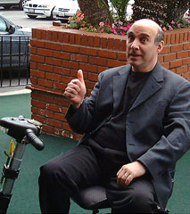

|
TGN1412Multiple sclerosis is a chronic degenerative disease of the central nervous system -- the most common neurological disease which claims the lives and livelihoods of young adults. Being diagnosed with multiple sclerosis is a frightening and devastating experience which threatens to disrupt people's lives in unpredictable ways. MS can invoke a range of feelings from disbelief and resentment, to absolute panic. Enormous pressures bear down on the families of MS victims -- who often have no choice but to become full-time care givers. In March of 2006, TGN1412 attempted to change all that. It appeared to be a new treatment for the devastating illnesses of leukemia, rheumatoid arthritis and multiple sclerosis. The medicine was developed by TeGenero -- a biopharmaceutical company headquartered Würzburg, Germany -- staffed by scientists dedicated to the identification and development of innovative, broadly applicable immunotheraputics. The formula was categorized as a SuperMAB, a unique class of Superantagonistic Monoclonal Antibodies, a proprietary antibody trademarked and patented by Tegenero. TGN1412 stimulated the generation of T lymphocytes, which serve as key regulators of immune responses in laboratory animals and humans. In short, it was touted as medicine capable of balancing the immune systems of those who suffer from diseases associated with life-threatening abnormalities. TGN1412 would quickly become synonymous with "big heads". For normal-headed, TGN1412-free comedian Jonathan Katz (Dr. Katz, Professional Therapist) MS symptoms began in 1996. "I was working on a TV show called Ink with Ted Danson, and after every episode we would take a curtain call and I noticed that I needed a head-start. I had a spinal tap, which didn't hurt. I had an MRI, where they put you in a tube [for] 45 minutes, and I actually enjoyed the privacy." TGN1412, also known as CD28, contains a highly unusual property for an antibody medicine: instead of blocking a cell's reaction, it causes a stimulation. For this reason, even a small dose might provoke a cascading, catastrophic calamity. Antibodies stay in the body for months. They can't easily be removed, even through multiple blood transfusions. Experimental drugs are typically tested on laboratory tissue samples or animals before they're considered "safe enough" to be injected into humans. TGN1422, on the other hand, was monoclonal antibody, designed to target a specifically humanoid protein. The
drug was administered with a technique called microdosing. First,
a blister is created on the patient's arm -- usually with a light, subsurface
pinprick, briefly applied heat, or mild radiation. Eight human test subjects volunteered to participate in a series of TGN1412 experiments, and each received compensation worth roughly $3,500 for their time, trouble, and risk. Within minutes of being given the first dose, the patients began suffering symptoms which led to vomiting and intense pain. They'd been cautioned that there might be some glandular swelling. Some were reported to be "screaming that they felt as if their heads were about to explode". Rising to the occasion, TGN1412 afforded witnesses a disturbing visual: the severe ballooning up of the heads of each participant. All six men immediately lapsed into comas. Doctors battled to save the men by giving them sequential blood transfusions and large amounts of fluids. The two volunteers who had received placebos acknowledged they "went down like dominoes". "They just all went down like flies, all six of them," said Myfanwy Marshall, girlfriend of one of the victims. Her partner, Mohammed Abdalla, age 28 -- a bar manager in London who volunteered for the experimental therapy primarily for the money. Abdalla planned to send the money to his family in Egypt to take pay off debts, care for his ill mother and set up a business for a sibling. "He did say that he was planning to come to Egypt in the summer with a big surprise for his younger brother Mahmood that he hoped would set him up financially for life. It is so tragic if that is why he is in the situation he is in now," an Egyptian friend of Abdalla said. After Marshall visited her boyfriend in the hospital, she emerged sobbing and visibly distressed. "They can't give us a cure, they're talking to experts. The doctors were on the phone to experts all night, asking what they can do. They've said to us 'we're in the dark -- we don't know what to do. We don't know this drug. He's young, gorgeous, hunky -- he's like a stud -- he's dark and gorgeous and I walked in and he's looking puffed out like the Elephant Man and he looks like a 45-year-old. They've just basically killed him within a day -- with one injection, a lethal injection." But what is even more tragic is the fact that the drug company was aware of this side effect. It has emerged that monkeys who were tested developed swollen necks after the trials, but the company went ahead with human trials. Northwick Park intensive care clinical director Ganesh Suntharalingam tried to assuage the ruffled feathers of those congregated. "These patients sometimes need a lot of fluid, and one result of that is severe but temporary swelling. This is distressing for relatives to see, but it does go away on recovery and it has no long-term effects." Richard Ley, spokesman for the Association of the British Pharmaceutical Industry, said he'd never heard of anything like it before. "This is an absolutely exceptional occurrence. I cannot remember anything comparable." According to The Register, Medical Research Council Technology chief executive Roberto Solari confided that instead of switching on the regulators, "we have switched on the activators and super-induced the immune system." From the Associated Press: "The idea you give six people an injection at the same time is unusual," says Kate Law, head of clinical trials for Cancer Research UK -- Britain's largest cancer charity. "In any of our tests, we never test drugs on the volunteers all at the same time." Since 1997, ten families of international patent applications concerning the generation of TeGenero's SuperMAB (including their mode of action, therapeutic application, composition and technological innovation) have been filed. In its Intellectual Property Statement, TeGenero announces that it will continue to claim intellectual property rights over inventions related to SuperMAB® technology and its application. The medical research company responsible for the TGN1412 drug trial, Parexel, insisted it had followed correct procedures. Professor Johannes Loewer, president of the Paul Ehrich Institute (which monitored the research) said, "There were adverse effects in certain doses. Some of the monkeys developed an increase in the lymph nodes. No monkeys died to our knowledge." During the animal trials, the reaction was considered serious enough by TeGenero officials to order the monitoring of the human volunteers’ immune systems. It can take a full decade for a drug to enter the human-trial stage -- and a tremendous cost. A Health Select Committee quoted the price of that process, somewhere around $897 million. TeGenero Immunopharmaceuticals was founded in June of 2000. Since then, they've raised more than $17 million in venture backing from investors like HBM BioVentures, BioM Venture Capital GmbH & Co Fonds KG and BioM AG. As of February 2006, the company had a staff of fifteen -- hardly justification for getting a swelled head.
|
 This affords the patient
limited, localized exposure to the therapy. The blister fills with inflammatory
fluid, containing cells whose reaction to the drug can be monitored.
This affords the patient
limited, localized exposure to the therapy. The blister fills with inflammatory
fluid, containing cells whose reaction to the drug can be monitored.